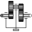

PartsRigid components such as bodies with mass and inertia and massless rods |
Package Contents
|
Frame fixed in the world frame at a given position |
|
|
Fixed translation of frame_b with respect to frame_a |
|
|
Fixed translation followed by a fixed rotation of frame_b with respect to frame_a |
|
|
Rigid body with mass, inertia tensor and one frame connector (12 potential states) |
|
|
Rigid body with mass, inertia tensor, different shapes for animation, and two frame connectors (12 potential states) |
|
|
Rigid body with box shape. Mass and animation properties are computed from box data and density (12 potential states) |
|
|
Rigid body with cylinder shape. Mass and animation properties are computed from cylinder data and density (12 potential states) |
|
|
Rigid body where body rotation and inertia tensor is neglected (6 potential states) |
|
|
Propagate 1-dim. support torque to 3-dim. system (provided world.driveTrainMechanics3D=true) |
|
|
1D inertia attachable on 3-dim. bodies (3D dynamic effects are taken into account if world.driveTrainMechanics3D=true) |
|
|  |
1D gearbox with arbitrary shaft directions and 3-dim. bearing frame (3D dynamic effects are taken into account provided world.driveTrainMechanics3D=true) |
|
Ideal rolling wheel on flat surface z=0 (5 positional, 3 velocity degrees of freedom) |
|
|
Ideal rolling wheel set consisting of two ideal rolling wheels connected together by an axis |
Information
This information is part of the Modelica Standard Library maintained by the Modelica Association.
Package Parts contains rigid components of a multi-body system. These components may be used to build up more complicated structures. For example, a part may be built up of a "Body" and of several "FixedTranslation" components.
Content
| Model | Description |
|---|---|
| Fixed | Frame fixed in world frame at a given position.
It is visualized with a shape, see shapeType below
(the frames on the two
sides do not belong to the component):
|
| FixedTranslation | Fixed translation of frame_b with respect to frame_a.
It is visualized with a shape, see shapeType below
(the frames on the two sides do not belong to the component):
|
| FixedRotation | Fixed translation and fixed rotation of frame_b with respect to frame_a
It is visualized with a shape, see shapeType below
(the frames on the two sides do not belong to the component): |
| Body | Rigid body with mass, inertia tensor and one frame connector.
It is visualized with a cylinder and a sphere at the
center of mass: |
| BodyShape | Rigid body with mass, inertia tensor, different shapes
(see shapeType below)
for animation, and two frame connectors: |
| Fixed BodyBox | Rigid body with box shape (mass and animation properties are computed
from box data and from density):
|
| BodyCylinder | Rigid body with cylinder shape (mass and animation properties
are computed from cylinder data and from density): |
| PointMass | Rigid body where inertia tensor and rotation is neglected: |
| Mounting1D | Propagate 1-dim. support torque to 3-dim. system |
| Rotor1D | 1D inertia attachable on 3-dim. bodies (without neglecting dynamic effects)
|
| BevelGear1D | 1D gearbox with arbitrary shaft directions (3D bearing frame) |
Components Fixed, FixedTranslation, FixedRotation
and BodyShape are visualized according to parameter
shapeType, that may have the following values (e.g., shapeType = "box"):
All the details of the visualization shape parameters are given in Visualizers.FixedShape
Colors in all animation parts are defined via parameter color. This is an Integer vector with 3 elements, {r, g, b}, and specifies the color of the shape. {r,g,b} are the "red", "green" and "blue" color parts, given in the ranges 0 .. 255, respectively. The predefined type MultiBody.Types.Color contains a menu definition of the colors used in the MultiBody library (this will be replaced by a color editor).